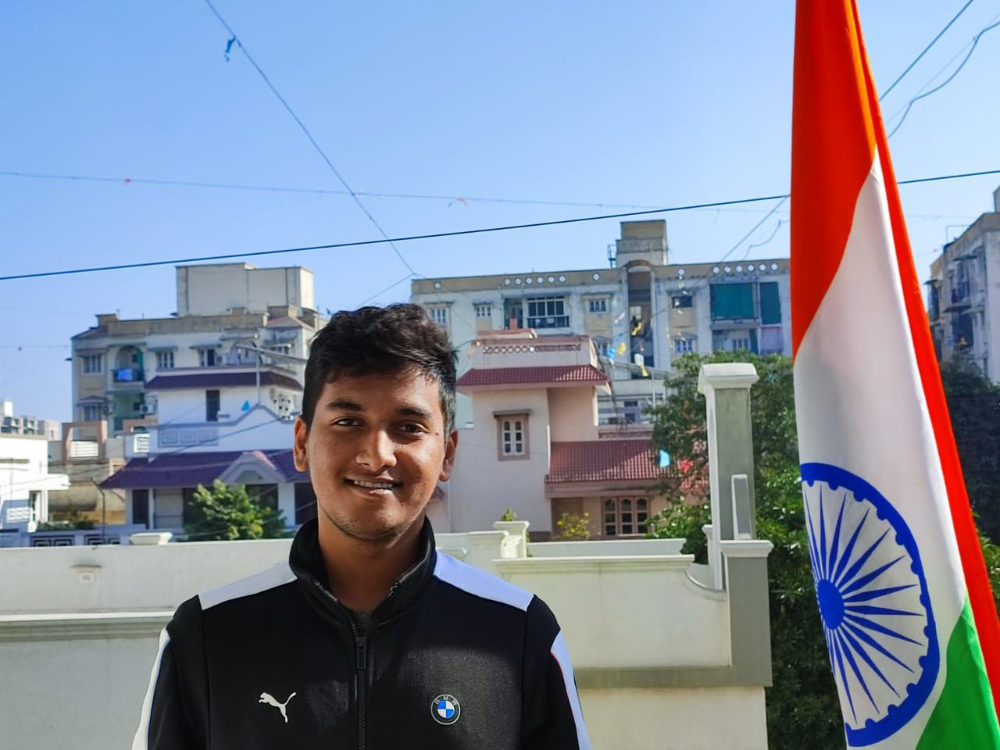

About
Dhruv Bhavsar is a multidisciplinary front-end developer and designer, based in Ahmedabad (India). He is a self-taught developer, loves to create multi-functional websites, designs for web-apps. More than that, he is an enthusiastic learner, who loves to learn new things and implement them in his projects.
Dhruv loves cooking and photography. Just like he explores and creates fine dishes, same goes for his websites. He loves to create websites that are not only functional but also beautiful, with a touch of secret ingredients.
Dhruv is always looking for inspiration for designing and developing in and around himself, a good trait aquired from his interest in photography.